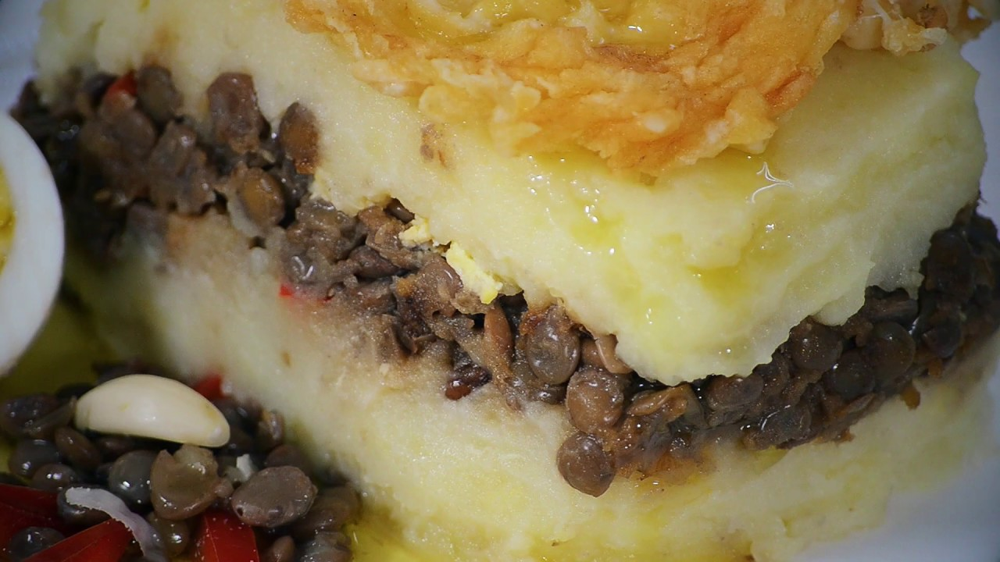

RECETA DE PASTEL DE PAPAS Y LENTEJAS
| ingredientes | foto |
|---|---|
|
 |
Preparacion
Lavar y pelar las papas. Cortalas en cubo y hervirlas en abundante agua hasta que esten tiernas.
Escurrirlas y hacer un pure con un pisa papas. Agregar la leche en polvo reconstituida, la manteca o aceite y los condimentos reservar.
(ver"¿como se prepara leche liquida a partir de leche en polvo?")
-
Lavar los vegetales.Pelar y cortar en cubos pequeños la cebolla y el morrón.Rallar la zanahoria. Saltear en un sartén u olla caliente con apenas aceite, hasta que estén dorados.
-
Remojar las lentejas durante 4-6 hrs. Retirar el agua de remojo y hervir en agua nueva hasta que estén casi listas. Agregarlas a los vegetales anteriores junto con los condimentos y la salsa de tomate. Dejar cocinar unos 10 minutos.
-
Hervir los huevos, picar y agregar al relleno.
En una asadera para horno disponer el relleno de lentejas y arriba el puré de papas. Agregar rodajas de queso cremoso y calentar en el horno hasta que se gratine.